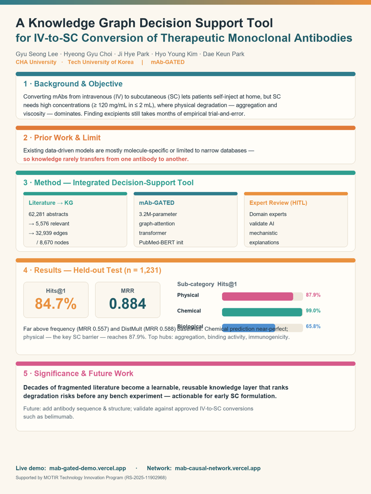

논문까지 썼다면, 이제 2분 AI 아바타 영상으로 학술대회·SNS에 발표합니다.
HeyGen은 대본(스크립트)을 넣으면 AI 아바타가 그대로 말하는 영상을 만들어 주는 도구입니다. 장면(Scene)마다 배경 이미지 + 대본을 넣으면, 말에 맞춰 배경이 바뀝니다.
구조: 주제 → 중요성 → 기존 한계 → 우리 방법 → 성과 → 의의. 6문단이 슬라이드 6장과 1:1 대응합니다.
Good morning. I'd like to share our work on a costly bottleneck in antibody drug development — converting monoclonal antibodies from intravenous to subcutaneous administration. Subcutaneous dosing lets patients self-inject at home. But it demands very high concentrations — at least 120 milligrams per milliliter, in under 2 milliliters. At these concentrations, physical degradation, such as aggregation and rising viscosity, takes over, and finding the right formulation can take months of trial and error. Data-driven models have helped, but most are molecule-specific, or limited to narrow experimental databases. As a result, knowledge rarely transfers from one antibody to another. We take a different path: an integrated decision-support tool with three parts. First, we mined 62,281 PubMed abstracts with a generative AI filter, kept 5,576 relevant papers, and built a mechanistic knowledge graph of 32,939 directed edges over 8,670 nodes. Second, we trained mAb-GATED, a 3.2 million-parameter graph-attention transformer, initialized with PubMed-BERT embeddings. Third, an expert-review interface lets domain scientists validate the model's explanations. On a held-out test set of 1,231 cases, mAb-GATED reached Hits at one of 84.7 percent, and a mean reciprocal rank of 0.884 — far above frequency and DistMult baselines. Chemical-stability prediction was nearly perfect, at 99.0 percent, and physical stability — the main barrier to subcutaneous conversion — reached 87.9 percent. This shows that decades of scattered literature can become a learnable, reusable knowledge layer — one that ranks degradation risks before a single bench experiment. Next, we will add antibody sequence and structure, and validate against approved conversions, such as belimumab. Thank you.
mg/mL → “milligrams per milliliter”, Hits@1 → “Hits at one”,
MRR → “mean reciprocal rank”처럼 풀어서 적어야 음성이 정확히 읽습니다.
mAb-GATED가 어색하면 “mab gated”, PubMed-BERT는 “pub-med bert”로.
장면마다 다른 배경을 깔면 “스피치할 때마다 그림이 바뀌는” 효과가 납니다. 오른쪽 아래는 아바타 자리라 비워 두었습니다.
이 프로젝트의 배경 6장은 heygen_backgrounds/slide_1_title.png … slide_6_significance.png로,
포스터 전체는 poster_mab_gated.png로 생성해 두었습니다.

포스터 한 장 버전 — 공유·인쇄용 (배경으로 정적 사용도 가능)
HeyGen에서 아바타(또는 내 사진으로 만든 아바타)와 영어 음성을 선택합니다.
‘Add Scene’으로 장면을 6개 만듭니다(슬라이드 1장 = 장면 1개).
각 장면에서 Add Media → Upload로 slide_1.png … slide_6.png를 배경으로 올립니다(꽉 차게).
아바타를 오른쪽 아래 원형으로 배치(슬라이드 빈 영역과 겹치지 않게).
각 장면의 스크립트 칸에 해당 문단 하나씩 붙여넣습니다 → 말에 맞춰 슬라이드가 바뀝니다.
‘Submit/Generate’ → 잠시 뒤 2분 영상 완성. 다운로드해 공유.
완성된 영상 파일(HeyGen) 말고, 실시간으로 대화하는 발표 아바타도 만들 수 있습니다. LiveAvatar로 아바타에게 mAb-GATED 지식 컨텍스트를 심어두면, 방문자가 음성으로 “2분 요약 해줘”, “IV→SC가 왜 어렵나요?”를 물어보면 아바타가 실시간으로 답합니다.
/v2/embeddings → iframe 임베드.
| HeyGen (영상) | LiveAvatar (라이브) | |
|---|---|---|
| 결과 | 다운로드 MP4 | 실시간 대화 페이지 |
| 쓰임 | 학회 제출·업로드 | 키오스크·웹 Q&A |
| 비용 | 생성 1회 | 분당 크레딧(대화 중) |
이제 데이터 수집부터 발표 영상까지, 연구의 전 과정을 직접 만들어 세상에 공유할 수 있습니다. 🎬